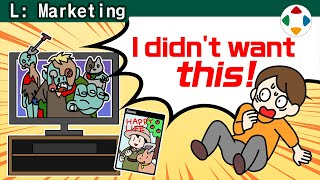
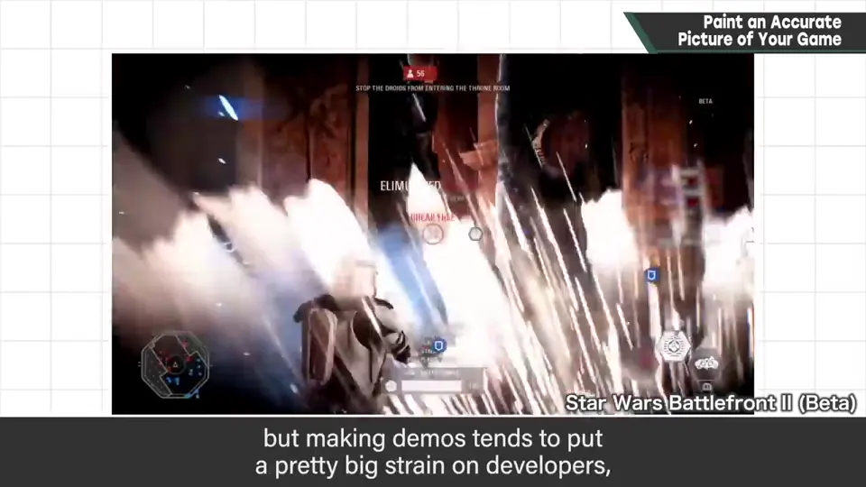
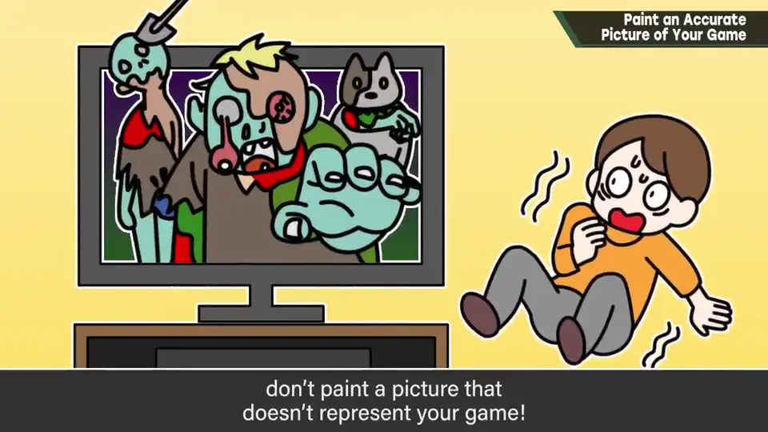
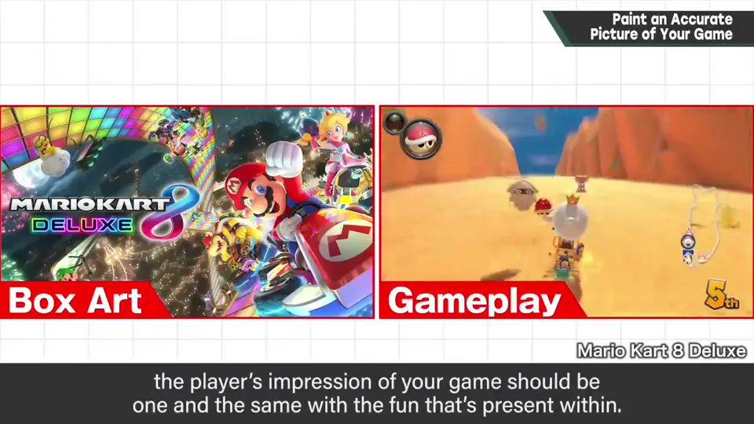
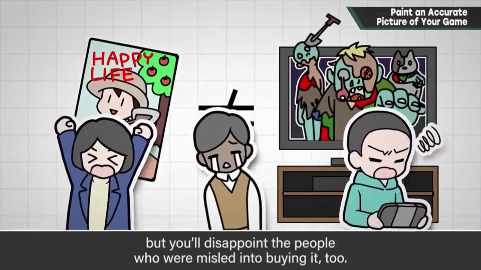
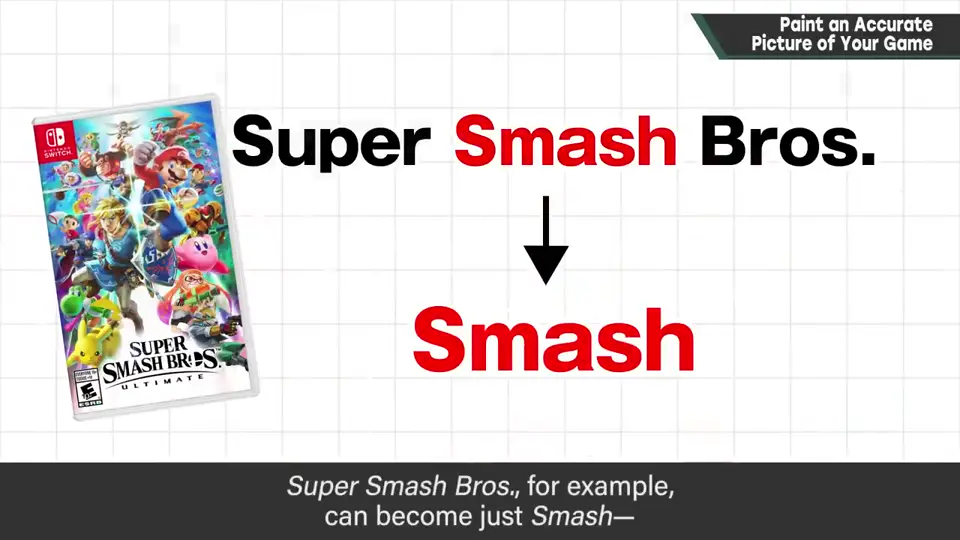
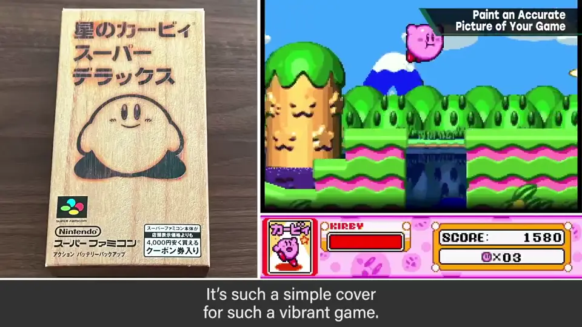
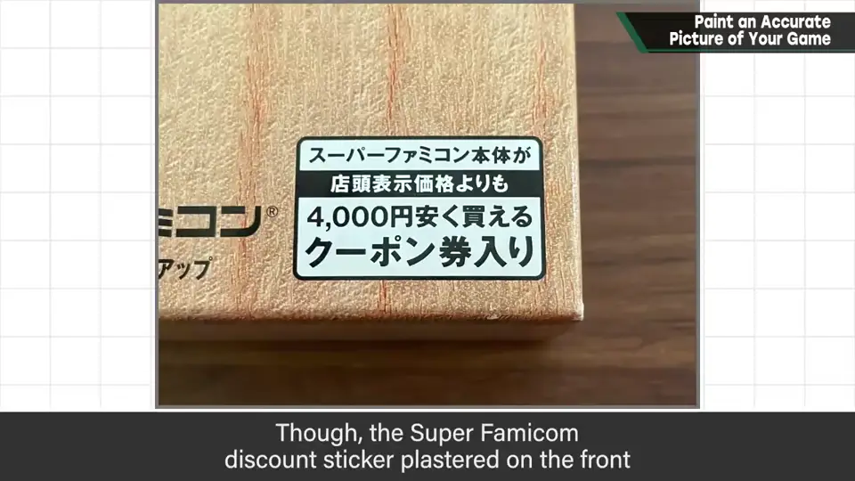
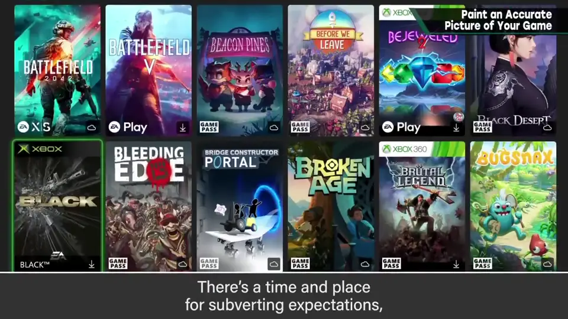

速览
游戏玩之前不知道内容。它提供什么玩法和乐趣，要靠名字、包装插画、截图、宣传影片来了解；有体验版就能实际试玩，但体验版开发通常也要很大劳力，不一定存在。所以要用标题和截图来展示内容，而绝不能做的是：无论多想在游戏内容上制造反转、出人意料，也不能拿出与商品印象不同的东西。比如买了香蕉却是苹果味，就不好。游戏应该新颖可以理解，但俯瞰产品印象时，购买时的印象和游戏中呈现的乐趣必须一致，绝对。标题和内容不一定都能按理想决定，但至少产品印象与实际有出入的话，不仅触达不了对它感兴趣的顾客，还会让误买的人失望。用各种要素给人惊喜也不坏，但至少别让产品印象和传达的形象有偏离。题外话：起标题时，日语版考虑一下省略成 4 个字的情况会好：「大乱闘スマッシュブラザーズ」→「スマブラ」，在决定标题的瞬间就想好了。他作品中包装与内容最脱节的，是日版《星之卡比 超级豪华版》：游戏本身很华丽，包装却非常简朴——这是「豪华内容装在上等桐木盒里」的概念，由糸井重里提出；也听说卡比原本就是简单的设计。产品版上印了超级任天堂的折扣券之类，有点微妙地毁了效果。但它看似与内容大幅脱节，作为表现却实在抓住了本质。什么都一样，直接表现并不是宣传的全部，这点糸井先生令人佩服。软件摆在店里时，让顾客拿起来的重要契机是产品的美术；出人意料也是策略之一，但更应努力准确传达商品。
1. 玩之前只能靠「外观」 0:03
游戏玩之前不知道内容。它提供什么玩法和乐趣，要靠名字、包装插画、截图、宣传影片来了解。
有体验版的话能实际试玩，但体验版开发通常也要很大的劳力，不一定能做。

2. 绝对不能做的事 0:33


比如买了香蕉，结果是苹果味——这不好吧。
游戏应该新颖，这可以理解；但俯瞰产品印象时，购买时的印象和游戏中呈现的乐趣必须一致——绝对。
标题和游戏内容不一定都能按理想决定，但至少产品印象与实际有出入，就不仅触达不了会对它感兴趣的顾客，还会让误买的人失望。

用各种要素给人惊喜并不坏，但至少别让产品印象和传达出的形象之间有偏离。
3. 题外话：4 字简称 1:43
起标题时，日语版可以考虑一下省略成 4 个字的情况。「大乱闘スマッシュブラザーズ」→「スマブラ」——在决定标题的瞬间就已经想好了。

4. 卡比 SDX 的桐木盒 1:59
樱井作品中包装与游戏内容最脱节的，是日版《星之卡比 超级豪华版》的包装：游戏本身很华丽，包装却非常简朴。


这是「把豪华的作品装进上等桐木盒」的概念，由糸井重里提出。也听说卡比本来就是简单的设计。
产品版上印了超级任天堂的折扣券等，有点微妙地毁了效果。
5. 准确传达商品 2:50
软件摆在店里时，让顾客拿起来的重要契机是产品的美术。出人意料也是策略之一，但更应努力准确地传达商品。

自测题
1. 宣传游戏时绝对不能做的是什么？
拿出与商品印象不符的东西；购买时的印象必须和游戏中的乐趣一致。 0:33
2. 商品印象与实际脱节会造成什么后果？
触达不到真正会感兴趣的顾客，还会让误买的人失望。 1:30
3. 《星之卡比 超级豪华版》日版包装的概念是什么？
糸井重里提出的「把豪华的作品装进上等桐木盒」，看似脱节却抓住本质。 1:59